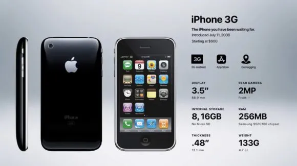

Generation 2: iPhone 3G
Release Date: July 11, 2008
The iPhone was a huge success in its first year. People were very happy with the phone, and they used it for the things it was designed for, such as email, web browsing, and calling/texting. Apple sold over 6 million iPhones in the first year, and they had to stop selling because they ran out of products. The iPhone was a groundbreaking product, and it changed the way people interact with technology. It is still one of the most popular smartphones in the world, and it is clear that the first year of its history was a major turning point for Apple.
Specification
- 3G capability, as the name suggests
- Bluetooth 2.0+EDR
- iOS 2.0, but can support up to iOS 4.2 (upgraded from the original iOS)
- A-GPS, which allowed for more accurate location services.
- 5 hours talk time or web browsing on 3G
- 10 hours talk time on 2G
- 6 hours of battery life on WiF
- 7 hours of battery life for videos
- 24 hours of battery life for just music
- 8 GB ($199) or 16 GB ($299) of storage space (up from 4 or 8)
iPhone 3G Countries and Networks
- Australia
- Austria
- Belgium
- Canada
- Denmark
- Finland
- Germany
- Hong Kong
- Ireland
- Italy
- Japan
- Mexico
- The Netherlands
- New Zealand
- Portugal
- Spain
- Sweden
- Switzerland
- United Kingdom
- United States